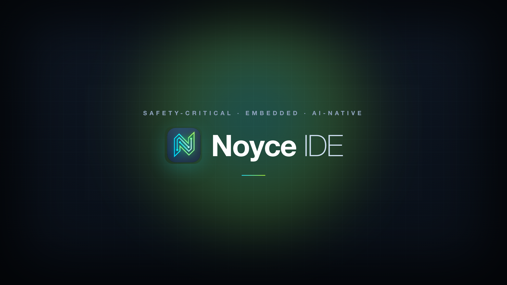
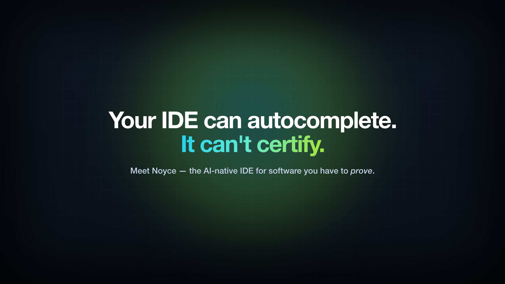
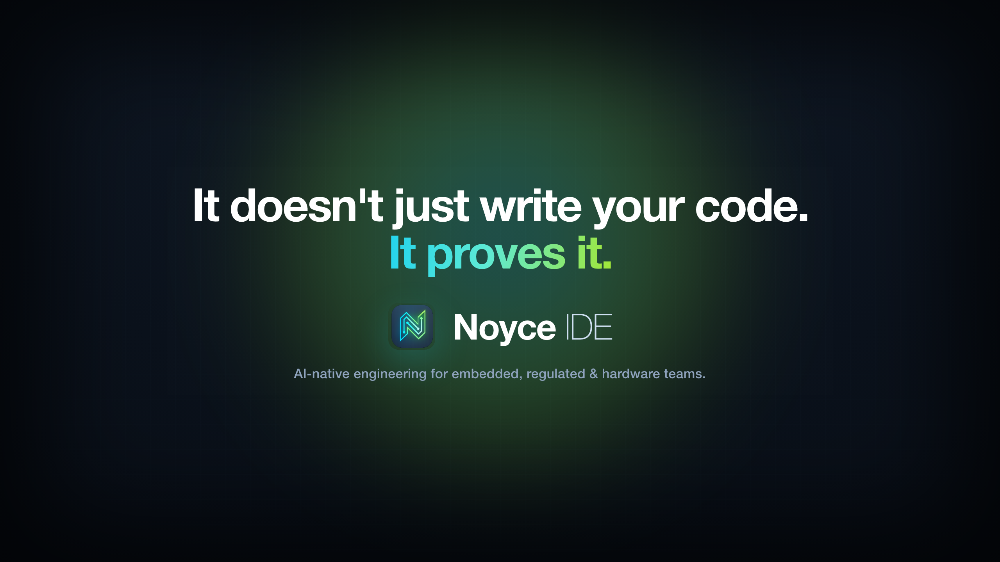
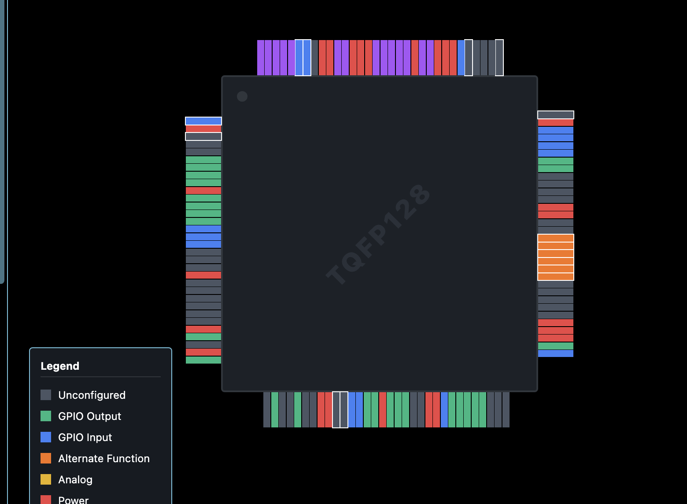
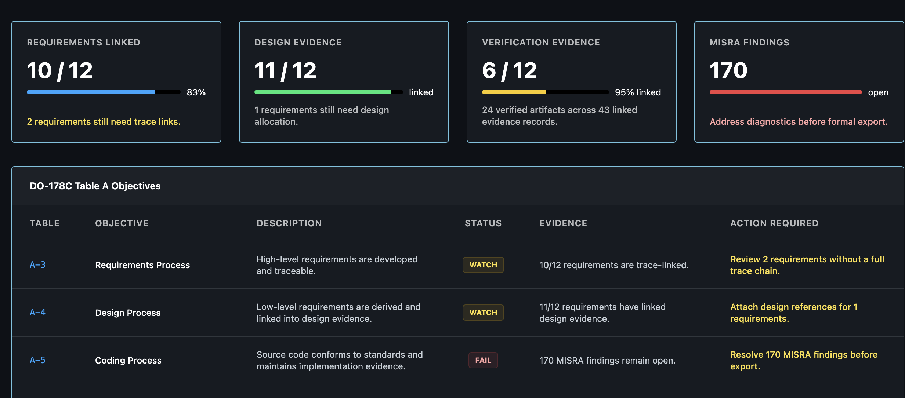
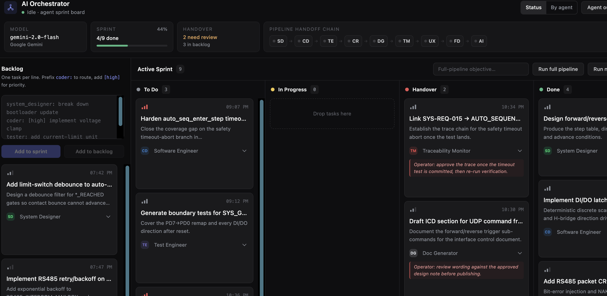
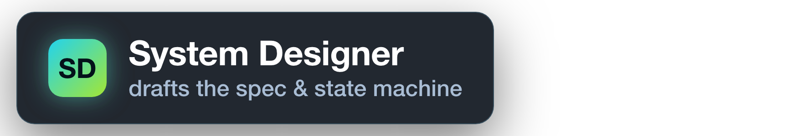

RTT
RTT logs
Capture firmware logs close to the code that produced them.
A Code-OSS based development platform for STM32 and embedded teams: AI-assisted firmware work, hardware telemetry, register insight, memory inspection, probe workflows, and aerospace-grade traceability in one workspace.



The page now uses cleaner full-screen captures from the IDE and gives each one enough room to communicate the actual feature.

Peripheral assignments, pin roles, and conflict candidates are presented as a visible board-level surface instead of buried configuration files.
Safety-oriented review state, requirement coverage, and validation progress are kept inside the same workbench as the firmware.


Firmware tasks move across design, coding, testing, review, documentation, and traceability lanes with explicit handoffs.
Noyce positions AI beside the real engineering surface: source files, register maps, telemetry, build output, debug context, and project topology.
// AI firmware assistant target: STM32 workspace context: TIM2 ISR · GPIO state · UART RTT logs svd: peripheral model resolved $ noyce ask "why is the control loop jittering?" reading timer configuration correlating telemetry spikes inspecting register snapshot suggestion: move ADC sample window outside ISR $ noyce patch --explain --test generated patch plan build gate pending

Surface live telemetry, probe status, RTT logs, register snapshots, memory values, and signal behavior in a workspace built for hardware validation.
Capture firmware logs close to the code that produced them.
Watch buffers, flags, counters, and control state while debugging.
Inspect peripheral state with SVD-aware names instead of raw hex alone.
Import STM32CubeIDE and CubeMX projects, resolve device metadata, prepare generated workspace files, and let Noyce index the firmware with hardware context.
Bring register views, peripheral maps, GPIO states, memory inspection, and probe/debug loops into the same flow as code review and AI assistance.
Resolve device peripherals, register names, bitfields, and descriptions when metadata is available.
Track pin usage, alternate functions, and sampled state alongside firmware code.
Keep probe discovery, target state, memory reads, and logs close to the editor.
Noyce is designed around simultaneous engineering work: reading code, checking hardware state, asking an agent, running commands, and validating behavior.
Peripheral and pin state are shown as an engineering surface, not a side note.
Requirement coverage and evidence status are visible without opening a separate tool.
Agent output is kept inspectable and tied to engineering handoffs.
Noyce builds on a familiar editor foundation while adding hardware plugins, AI workflows, telemetry surfaces, compliance panels, and firmware-first project services.
Support the workflows engineers already trust while adding dedicated surfaces for probes, registers, telemetry, traceability, and AI review.
A native sidecar handles filesystem operations, project scans, build execution, debug-probe enumeration, telemetry APIs, and embedded import helpers while the workbench stays responsive.
A focused feature set for hardware teams building, debugging, and validating firmware against real devices and real engineering constraints.
Ask questions against code, registers, build logs, and workspace state.
Import CubeIDE/CubeMX projects and prepare generated Noyce workspace files.
Use device metadata to make registers and bitfields understandable.
Stream and inspect hardware signals while developing firmware.
See peripheral state as named engineering context, not only hex dumps.
Watch addresses, buffers, flags, and state during debug sessions.
Discover probes and attach debug workflows to the active workspace.
Bring firmware logs into the engineering workspace with context.
Present tasks, timing, and runtime behavior as first-class development context.
Build on Code-OSS compatibility and Noyce-specific hardware plugins.
Turn imported firmware projects into organized Noyce workspaces.
Support evidence, traceability, review, and safety-oriented engineering discipline.
Noyce is designed around the real sequence hardware engineers follow when bringing up and validating embedded systems.
Install Noyce IDE, open an embedded firmware workspace, connect your probe, and bring AI assistance into the hardware engineering loop.